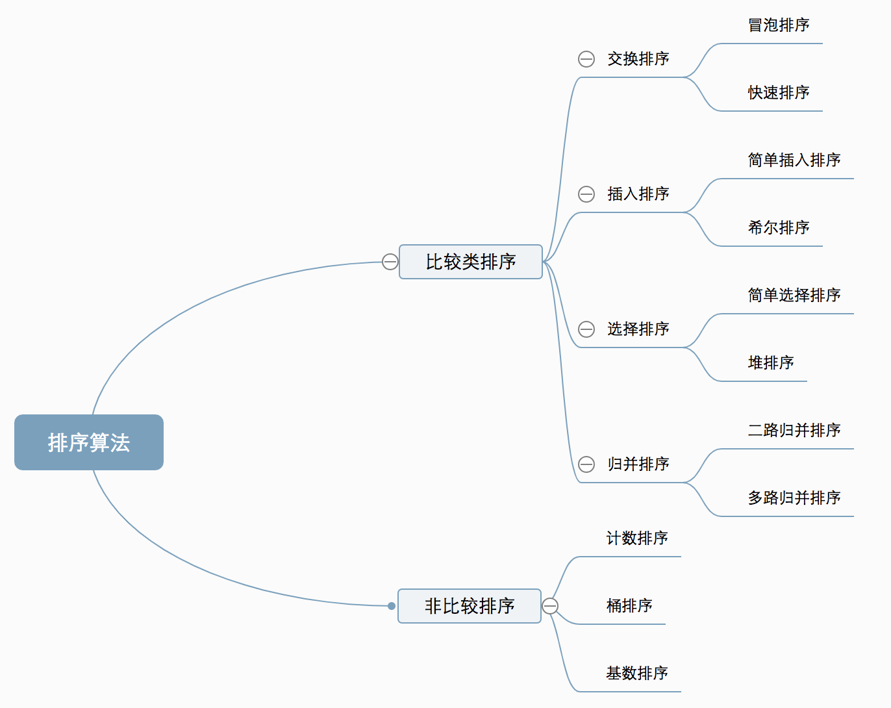

分治，顾名思义，就是分而治之，将一个大问题分解成小的子问题来解决，小的子问题解决了，大问题也就解决了。
一、十大排序算法


相关概念
- 稳定：如果a原本在b前面，而a=b，排序之后a仍然在b的前面。
- 不稳定：如果a原本在b的前面，而a=b，排序之后 a 可能会出现在 b 的后面。
- 时间复杂度：对排序数据的总的操作次数。反映当n变化时，操作次数呈现什么规律。
- 空间复杂度：是指算法在计算机内执行时所需存储空间的度量，它也是数据规模n的函数。
一、冒泡排序
- 概念
冒泡排序只会操作相邻的两个数据。每次冒泡操作都会对相邻的两个元素进行比较，看是否满足大小关系要求。如果不满足就让它俩互换。一次冒泡会让至少一个元素移动到它应该在的位置，重复n次，就完成了n个数据的排序工作。
- 实现
1
2
3
4
5
6
7
8
9
10
11
12
13
14
15
16
17
18
19
20
21
22
23
24
25
| function bubbleSort($data)
{
$len = count($data);
if ($len <= 1) {
return $data;
}
for($i = 0; $i < $len; $i++) {
for($j = 0; $j< $len - $i -1; $j++) {
$flag = false;
if ($data[$j] > $data[$j+1]){
$temp = $data[$j];
$data[$j] = $data[$j+1];
$data[$j+1] = $temp;
$flag = true;
}
}
if (!$flag) {
break;
}
}
return $data;
}
|
二、快速排序
- 概念
从数列中挑出一个元素，称为基准（pivot），依次取所有元素和基准对比，所有比基准小的元素摆放在基准前面，所有比基准值大的元素摆在基准后面。然后基于递归(recursively)算法把小于基准值元素的子数列和大于基准值元素的子数列排序，最终得到结果。
- 实现
1
2
3
4
5
6
7
8
9
10
11
12
13
14
15
16
17
18
19
20
21
22
23
| function quickSort($data)
{
$len = count($data);
if ($len <= 1) {
return $data;
}
$base = $data[0];
$left = [];
$right = [];
for($i=1; $i<$len; $i++) {
if ($data[$i] > $base) {
$left[] = $data[$i];
} else {
$right[] = $data[$i];
}
}
$left = quickSort($left);
$right = quickSort($right);
return array_merge($left, (array)$base, $right);
}
|
三、插入排序
概念
将数组中的数据分为两个区间，已排序区间和未排序区间。初始已排序区间只有一个元素，就是数组的第一个元素。插入算法的核心思想是依次取未排序区间中的元素，在已排序区间中找到合适的插入位置将其插入，并保证已排序区间数据一直有序。重复这个过程，直到未排序区间中元素为空，算法结束。
实现
1
2
3
4
5
6
7
8
9
10
11
12
13
14
15
16
17
18
19
20
21
22
23
24
| function insertionSort($data)
{
$n = count($data);
if ($n <= 1) {
return $data;
}
for ($i = 1; $i < $n; ++$i) {
$value = $data[$i];// 从下标为1开始，依次取后面的数和前面已排好序的数进行比较
// 查找插入的位置
$j = $i - 1;
for ($j; $j >= 0; --$j) {
if ($data[$j] > $value) {
$data[$j + 1] = $data[$j];// 数据移动
} else {
break;
}
}
$data[$j + 1] = $value;// 插入数据
}
return $data;
}
|
四、选择排序
概念
选择排序算法的实现思路有点类似插入排序，也分已排序区间和未排序区间。但是选择排序每次会从未排序区间中找到最小的元素，将其放到已排序区间的末
尾(升序时)。
实现
1
2
3
4
5
6
7
8
9
10
11
12
13
14
15
16
17
18
19
20
| function selectionSort($data)
{
$len = count($data);
if ($len <= 1) {
return $data;
}
for ($i = 0; $i < $len - 1; $i++) {
$p = $i;//假设$i是最小的值的位置
for ($j = $i + 1; $j < $len; $j++) {
if ($data[$p] > $data[$j]) {
$p = $j;
}
}
$tmp = $data[$p];
$data[$p] = $data[$i];
$data[$i] = $tmp;
}
return $data;
}
|
五、希尔排序
- 概念
希尔排序(Shell’s Sort)是插入排序的一种又称“缩小增量排序”(Diminishing Increment Sort)，是直接插入排序算法的一种更高效的改进版本。希尔排序是非稳定排序算法。该方法因D.L.Shell于1959年提出而得名。
- 实现
六、归并排序
给定一个待排序数组，先把数组从中间分成前后两部分，然后对前后两部分分别排序，再将排好序的两部分合并在一起，这样整个数组就都有序了。
归并排序使用的就是分治思想。
- 分治算法一般都是用递归来实现的
- 分治是一种解决问题的处理思想，递归是一种编程技巧，两者并不冲突
实现
1
2
3
4
5
6
7
8
9
10
11
12
13
14
15
16
17
18
19
20
21
22
23
24
25
26
27
28
29
30
31
32
33
34
35
36
37
38
39
40
41
42
43
44
45
46
47
48
49
50
51
52
53
54
55
56
57
58
| function mergeSort($data)
{
$len = count($data);
if ($len <=1) {
return $data;
}
$middle = intval($len/2);
$left = mergeSort(array_slice($data, 0, $middle));
$right = mergeSort(array_slice($data, $middle));
$data = mergeArr($left, $right);
// $data = mergeArr1($left, $right);
return $data;
}
function mergeArr($arr1, $arr2)
{
$result = [];
// 合并两个数组的算法NB
while (count($arr1) && count($arr2)) {
$result[] = $arr1[0] < $arr2[0] ? array_shift($arr1) : array_shift($arr2);
}
return array_merge($result, $arr1, $arr2);
}
function mergeArr1($arr1, $arr2)
{
$i = 0;
$j = 0;
$result = array();
$len1 = count($arr1);
$len2 = count($arr2);
while ($i < $len1 && $j < $len2) {
if ($arr1[$i] < $arr2[$j]) {
$result[] = $arr1[$i];
$i++;
} else {
$result[] = $arr2[$j];
$j++;
}
}
while ($i < $len1) {
// $result[] = $arr1[$i++];
$result[] = $arr1[$i];
$i++;
}
while ($j < $len2) {
// $result[] = $arr2[$j++];
$result[] = $arr2[$j];
$j++;
}
return $result;
}
|
七、基数排序
- 算法原理(以排序10万个手机号为例来说明)
- 比较两个手机号码a，b的大小，如果在前面几位中a已经比b大了，那后面几位就不用看了
- 借助稳定排序算法的思想，可以先按照最后一位来排序手机号码，然后再按照倒数第二位来重新排序，以此类推，最后按照第一个位重新排序
- 经过11次排序后，手机号码就变为有序的了
- 每次排序有序数据范围较小，可以使用桶排序或计数排序来完成
- 使用条件
- 要求数据可以分割独立的“位”来比较
- 位之间有递进关系，如果a数据的高位比b数据大，那么剩下的地位就不用比较了
- 每一位的数据范围不能太大，要可以用线性排序，否则基数排序的时间复杂度无法做到O(n)
八、计数排序
- 算法原理
- 计数其实就是桶排序的一种特殊情况
- 当要排序的n个数据所处范围并不大时，比如最大值为k，则分成k个桶
- 每个桶内的数据值都是相同的，就省掉了桶内排序的时间
九、桶排序
- 算法原理:
- 将要排序的数据分到几个有序的桶里，每个桶里的数据再单独进行快速排序
- 桶内排完序之后，再把每个桶里的数据按照顺序依次取出，组成的序列就是有序的了
- 使用条件
- 要排序的数据需要很容易就能划分成m个桶，并且桶与桶之间有着天然的大小顺序
- 数据在各个桶之间分布是均匀的。
- 适用场景
- 桶排序比较适合用在外部排序中
- 外部排序就是数据存储在外部磁盘且数据量大，但内存有限无法将整个数据全部加载到内存中。
十、堆排序
- 堆排序(英语：Heapsort)是指利用堆这种数据结构所设计的一种排序算法。堆是一个近似完全二叉树的结构，并同时满足堆积的性质：即子节点的键值或索引总是小于(或者大于)它的父节点。
十一、优先队列排序算法
- 问题：从10000个记录行中取随机取三个最小值
- 过程如下
- 对于这 10000 个准备排序的 (R,rowid)，先取前三行，构造成一个堆；
- 取下一个行 (R’,rowid’)，跟当前堆里面最大的 R 比较，如果 R’小于 R，把这个 (R,rowid) 从堆中去掉，换成 (R’,rowid’)；
- 重复第 2 步，直到第 10000 个 (R’,rowid’) 完成比较。

参考
- 十大排序算法
- 维基百科定义